Farbabbildung aus zweiter Matrix
3D-Colormap-Other-Mat
Zusammenfassung
Origin kann vierdimensionale Daten durch Farbabbildung eines Oberflächendiagramms mit Hilfe einer zweiten Matrix darstellen.
- 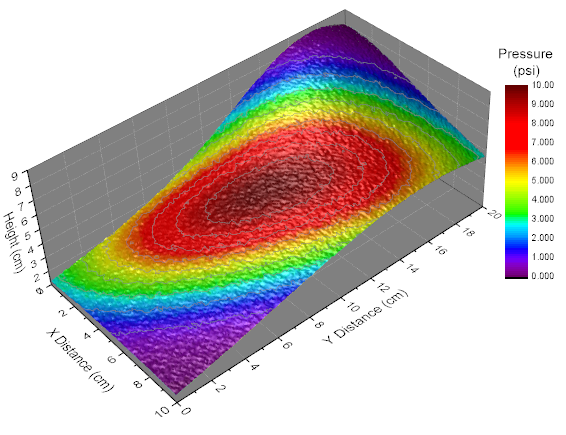
Origin-Version mind. erforderlich: Origin 2015 SR0
Was Sie lernen werden
- Eine farbige Oberfläche aus einer Matrix erstellen
- Ein Oberflächendiagramm mit Hilfe einer zweiten Matrix durch Farbabbildung darstellen
- Ebenen und Paletten der Farbabbildung benutzerdefiniert anpassen
- Beleuchtung im Diagramm steuern (Ab Origin 9 SR0)
Schritte
Dieses Tutorial basiert auf dem Projekt Tutorial Data: <Origin-Verzeichnis>\Samples\Tutorial Data.opj.
- Öffnen Sie das Projekt Tutorial Data und navigieren Sie zum Ordner Surface with Colormap from Another Matrix im Projekt Explorer.
- Aktivieren Sie die Matrix MBook1D. Sie sollten zwei Miniaturbilder über den Matrixdaten sehen, gleich unter der Titelleiste. (Wenn Sie diese Miniaturbilder nicht sehen, klicken Sie mit der rechten Maustaste auf die Matrixtitelleiste und wählen Sie Miniaturbild zeigen.) Wählen Sie dann Miniaturbild 1 aus.
- Klicken Sie im Hauptmenü auf Zeichnen > 3D: 3D-farbige Oberfläche, um ein Oberflächendiagramm zu erzeugen.
- 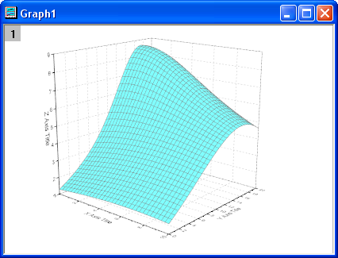
- Klicken Sie zum Öffnen des Dialogs Details Zeichnung doppelt auf das Diagramm. Wählen Sie (MBook1D)MSheet1 im linken Bedienfeld. Wechseln Sie im rechten Bedienfeld zur Registerkarte Füllen. Wählen Sie Konturfüllung aus Matrix. Wählen Sie dann Mat(2) für die vordere Oberfläche.
- 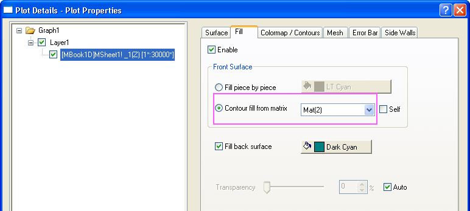
- Wechseln Sie zur Registerkarte Farbpalette/Kontur und klicken Sie auf die Überschrift Ebene..., um den Dialog Ebenen festlegen zu öffnen. Klicken Sie in diesem Dialog auf die Schaltfläche Min./Max. suchen und legen Sie die Anz. Hauptebenen und Anz. Nebenebenen auf 10 und 9 fest. Klicken Sie auf OK, um den Dialog zu schließen.
- 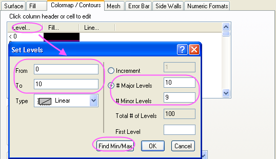
- Klicken Sie auf die Überschrift Füllung, um den Dialog Füllung zu öffnen. Wählen Sie die Option Palette laden und klicken Sie dann auf die Schaltfläche Palette auswählen, um die Palette Rainbow auszuwählen. Klicken Sie auf OK, um diesen Dialog zu schließen.
- 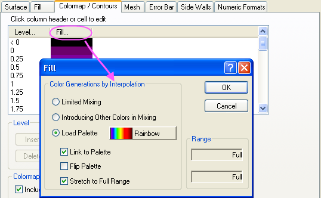
- Aktivieren Sie das Kontrollkästchen Konturen aktivieren. Klicken Sie auf die Überschrift Linie, um den Dialog Konturlinien zu öffnen. Aktivieren Sie in diesem Dialog das Kontrollkästchen Nur auf Hauptebenen zeigen und legen Sie die Linieneigenschaften, wie unten zu sehen, fest. Klicken Sie auf OK, um den Dialog zu schließen.
- 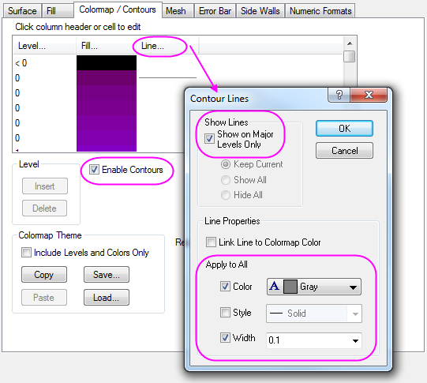
- Wechseln Sie zur Registerkarte Drahtgitter und deaktivieren Sie das Kontrollkästchen Aktivieren, um das Drahtgitter zu deaktivieren.
- Wählen Sie Layer1 im linken Bedienfeld und wechseln Sie zur Registerkarte Beleuchtung im rechten Bedienfeld. Wählen Sie Direktional unter Modus. Legen Sie für Horizontal und Vertikal die Werte 124 bzw. 40 fest und ändern Sie die Farbe von Diffus in Hellgrau und von Spiegel in Grau. Setzen Sie den Glanz dann auf 7.
- 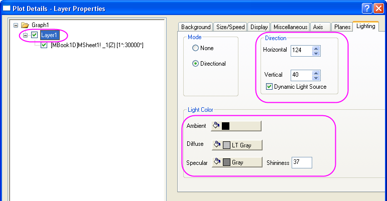
- Wechseln Sie zur Registerkarte Ebenen, setzen Sie die Farbe auf Grau und wählen Sie Vordere Ecke in der Auswahlliste Würfel.
- 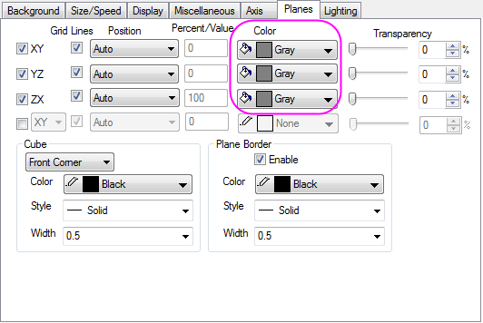
- Wechseln Sie zur Registerkarte Achsen und nehmen Sie dort die Einstellungen, wie unten zu sehen, vor. Klicken Sie auf OK, um den Dialog zu schließen.
- 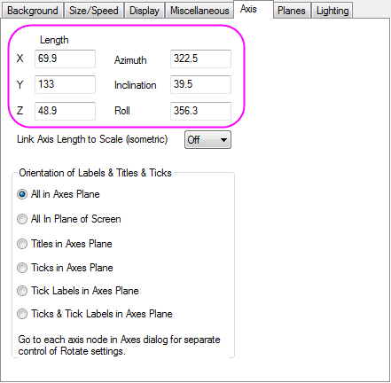
- Lassen Sie das Grafikfenster aktiviert. Wählen Sie Einfügen: Farbskala, um eine neue Farbskala in das Diagrammfenster hinzuzufügen.
- Klicken Sie doppelt auf die Farbskala, um den Dialog Eigenschaften Farbskala zu öffnen. Wählen Sie Layout im linken Bedienfeld, setzen Sie die Dicke der Farbbalken mit 150 fest und aktivieren Sie das Kontrollkästchen Umgekehrte Reihenfolge.
- 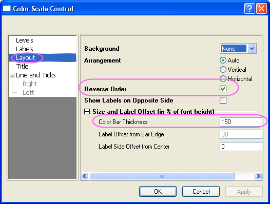
- Wählen Sie Beschriftungen im linken Bedienfeld und setzen Sie im rechten Bedienfeld die Schriftgröße auf 14, wie unten zu sehen:
- 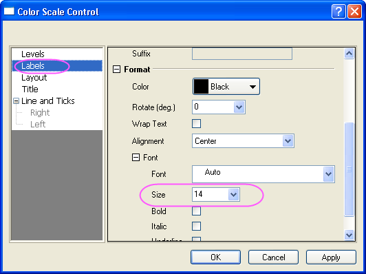
- Klicken Sie auf OK, um das Dialogfeld Eigenschaften Farbskala zu schließen.
- Klicken Sie doppelt auf den X-, Y- und Z-Achsentitel und geben Sie "X distance", "Y distance" und "Height" ein. Fügen Sie oberhalb der Farbskala ein Textobjekt "Pressure(psi)" ein.
- Das Diagramm sollte am Ende folgendermaßen aussehen: